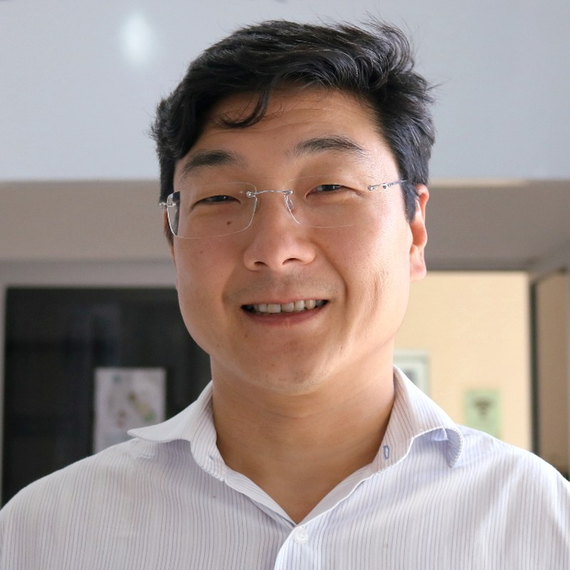

Quem organiza o ciclo e quem já tem data marcada para apresentar.

19/08/2026 · Seminário 1
Gerente do Instituto Internacional de Neurociências Edmond e Lily Safra (IIN-ELS) do Instituto Santos Dumont (ISD) e docente do Curso de Mestrado em Neuroengenharia do IIN-ELS. Pós-Doutorado (2006) e doutorado (2003) em Ciências (Fisiologia Humana) pelo Instituto de Ciências Biomédicas da USP; graduação em Fisioterapia pela Faculdade de Medicina da USP (1996).
26/08/2026 · Seminário 2